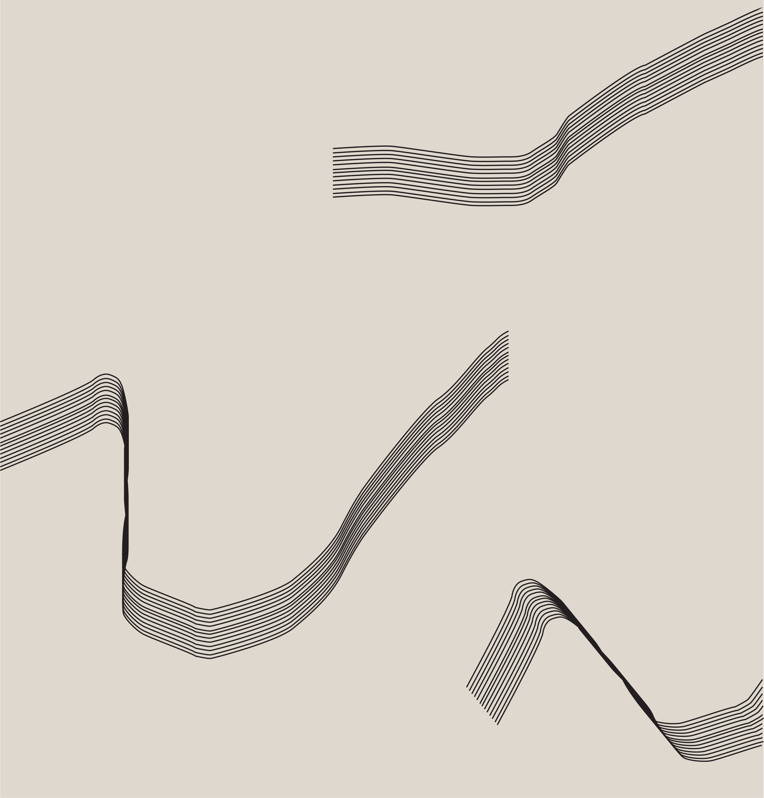

Stand beside it
we can't hide the
way it makes us glow
It's no good unless it grows
feel this burning
love of mine
Deep inside the ever-spinning
tell me does it feel?
It's no good unless it's real
hillsides burning
Wild-eyed turning 'til we're running
from it
I'll take care of you
if
you
ask
me
to
In a year or two
oh oh oh
You say swimming in the lake
we'll come across a snake
It is real and then it's fake
feel its heartbeat
Feel what you heat
far so fast it
feels too late
I'll take care of you
if
you
ask
me
to
In a year or two
oh oh oh
